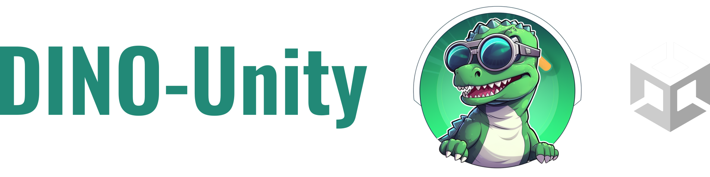

HoloLens 2 & Detection for Infrared Navigation with OST AR headsets
Overview
A sample Unity 2021 project which consumes the DINO-DLL project and creates a Unity app for the HoloLens 2 to position virtual models based on infrared tracking data.
This is a demo-app showcasing the tool-tracking work we describe in our publication Semi-Automatic Infrared Calibration for Augmented Reality Systems in Surgery[1] by Hisham Iqbal & Ferdinando Rodriguez y Baena.
What does this app do?
This project can be used in its current state to allow the HoloLens 2 to track two tools which can be 3D printed and assembled as described in DINO-IR-Tools.
How do I use and customise the app?
Check out the tutorials documentation for more information on topics like:
- What's included in this app
- How to print performance/profiling data for the IR tracking
- Adding your own custom tools/geometries
- How information is exchanged between the C++
DINO-DLL and DINO-Unity
Requirements
- Unity 2021 (2021.3.2f1 was used for this project)
- Enable Research Mode on your HoloLens 2: see tutorial here
- Visual Studio (for this project, Visual Studio 2022 configured for Unity development was used during testing)
- The project has a dependency on Newtonsoft JSON.NET, which was included through Unity's Package Manager: [Add package from git URL] -> 'com.unity.nuget.newtonsoft-json'
- 3-D printing and assembling two tools, as included in
DINO-IR-Tools.
Getting Started
Note: These steps assume no changes to the Unity project. If you need to change tool geometries, double check the tutorials to make sure you've configured everything properly.
- If you have made any changes to
DINO-DLL, then make sure you copy over the latest HL2DinoPlugin.winmd and HL2DinoPlugin.dll files into the folder: Assets/Plugins/WSA
- Unity build settings:
- Target Device: HoloLens
- Architecture: ARM64
- Build Type: D3D Project
Build, and then open the Visual Studio .sln file. Add the 'restricted capability' to the Package.appxmanifest file.
As per the instructions provided on the HoloLens2-ResearchMode-Unity README.md by petergu684, make the following modifications to your Package.appxmanifest.
Add xmlns:rescap="http://schemas.microsoft.com/appx/manifest/foundation/windows10/restrictedcapabilities" and IgnorableNamespaces="uap uap2 uap3 uap4 mp mobile iot rescap" to the file, and add in the necessary capabilities.
Your resulting app manifest should look something like:
<Package
xmlns:mp="http://schemas.microsoft.com/appx/2014/phone/manifest"
xmlns:uap="http://schemas.microsoft.com/appx/manifest/uap/windows10"
xmlns:uap2="http://schemas.microsoft.com/appx/manifest/uap/windows10/2"
xmlns:uap3="http://schemas.microsoft.com/appx/manifest/uap/windows10/3"
xmlns:uap4="http://schemas.microsoft.com/appx/manifest/uap/windows10/4"
xmlns:iot="http://schemas.microsoft.com/appx/manifest/iot/windows10"
xmlns:mobile="http://schemas.microsoft.com/appx/manifest/mobile/windows10"
xmlns:rescap="http://schemas.microsoft.com/appx/manifest/foundation/windows10/restrictedcapabilities"
IgnorableNamespaces="uap uap2 uap3 uap4 mp mobile iot rescap"
xmlns="http://schemas.microsoft.com/appx/manifest/foundation/windows10">
<Capabilities>
<rescap:Capability Name="perceptionSensorsExperimental" />
<Capability Name="internetClient" />
<Capability Name="internetClientServer" />
<Capability Name="privateNetworkClientServer" />
<uap2:Capability Name="spatialPerception" />
<DeviceCapability Name="webcam" />
</Capabilities>
- Ensure your
.sln is set up to build for Release and ARM64, and then deploy to the HoloLens
- You will most likely need to restart your headset the first time you deploy. To do this, just use the standard voice command
"Restart device"
- After restarting, if everything has gone to plan, you should see something like the GIF in the Overview section (e.g. updating sensor images and tool tracking)
Acknowledgements
- If this project is useful for your research or work, please considering citing the following publication[1]:
@inproceedings{Iqbal2022,
author = {Hisham Iqbal and Ferdinando Rodriguez y Baena},
journal = {2022 IEEE/RSJ International Conference on Intelligent Robots and Systems (IROS 2022)},
title = {Semi-Automatic Infrared Calibration for Augmented Reality Systems in Surgery},
year = {2022},
}
- A note of thanks for:
- Prof Ferdinando Rodriguez y Baena: for project supervision and for being a source of great advice
- Andreas Keller: for kindly helping out with testing software compilation. See Andreas's excellent HoloLens2-IRTracking project for an alternative setup which achieves similar goals.
- The project structure for consuming a C++/WinRT component and logic for handling incoming DLL data was inspired by HoloLens2-ResearchMode-Unity by petergu684. Check it out for a very good insight into how you can visualise other sensor-streams from the HoloLens 2.
Additional Notes
License
This project is licensed under the BSD License.
App Manifest
The following sources were all useful for understanding how to modify the appxmanifest file:
To-Do List
There are a few features which are yet to be implemented and are left for future TODO's.
On the Unity side:
🔲 Make the palm UI menu voice-activated
🔲 Moving the tool config file location into a place where users can easily change tool geometries at runtime without having to recompile the app.
[1]: Iqbal H., Rodriguez y Baena, F. (2022) Semi‑Automatic Calibration for Augmented Reality Systems in Surgery. 2022 IEEE/RSJ International Conference on Intelligent Robots and Systems dx.doi.org/10.1109/IROS47612.2022.9982215